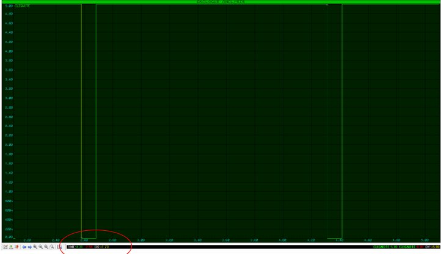
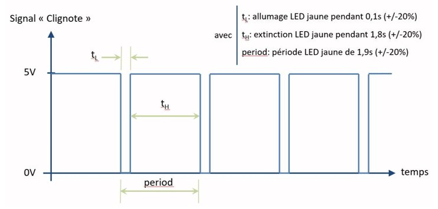
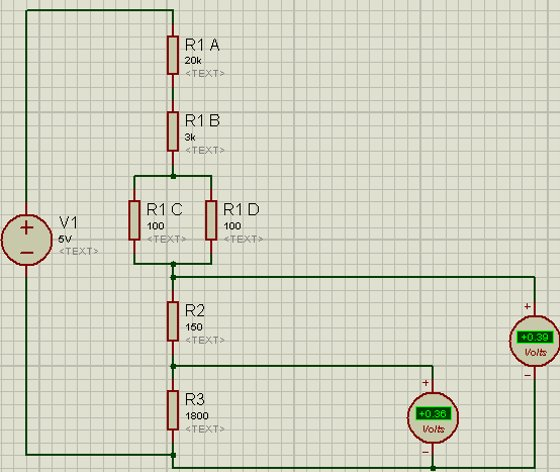
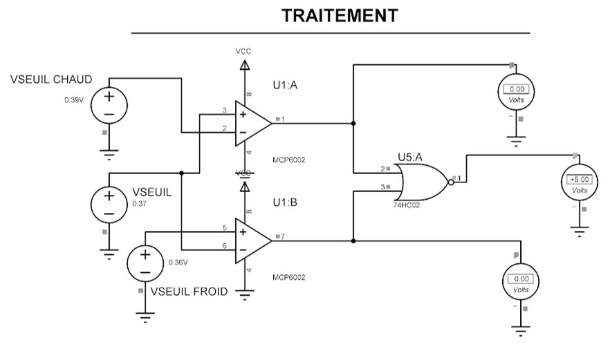
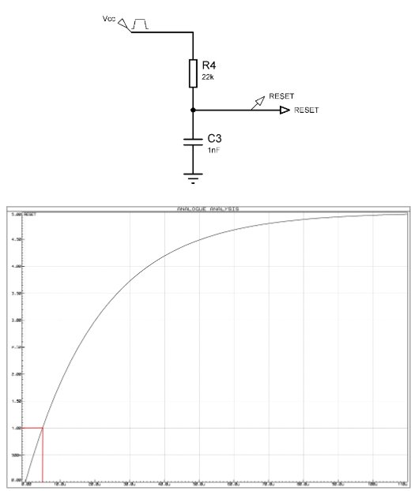
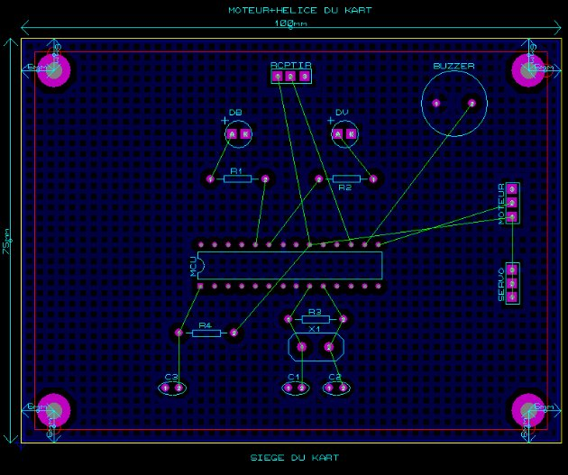

J'affine une solution technique
en m'appuyant sur un maquettage numérique et/ou matériel
Choisir un composant ne suffit pas : encore faut-il vérifier que la solution retenue se comporte bien dans les conditions du cahier des charges. Cette compétence consiste à simuler et/ou maquetter le circuit avant de le réaliser, afin d'itérer sur les valeurs et de valider les performances attendues avant tout engagement en fabrication.
BUT 1 · SAÉ S1
SLR — Système Sonore et Lumineux Rafale
Pour le projet SLR, la fonction à affiner était le générateur de clignotement piloté par un NE555 en montage astable, soumis à l'exigence EXIG_CLIGNOTE : une période de 1,9 s (±20 %) et un temps d'allumage de 0,1 s (±20 %). À partir des formules du NE555, j'ai calculé puis normalisé en série E6 les valeurs Ra = 22 kΩ, Rb = 1,5 kΩ et C = 100 µF, avant de lancer une simulation sous ISIS pour vérifier le chronogramme réel du signal « Clignote ».
La mesure sur le chronogramme simulé donne une période de 1,73 s et un temps d'allumage de 0,103 s, soit des écarts respectifs de -8,8 % et +3,0 % par rapport aux valeurs cibles du cahier des charges — bien dans la tolérance de ±20 % autorisée. Cette simulation a permis de valider les valeurs normalisées de Ra, Rb et C avant tout passage en fabrication.

Figure 1 : Chronogramme théorique attendu du signal « Clignote » (§EXIG_CLIGNOTE)

Figure 2 : Mesure du chronogramme simulé sous ISIS (Ra = 22 kΩ, Rb = 1,5 kΩ, C = 100 µF)
BUT 1 · SAÉ S1
TDB — Thermomètre De Bébé
Pour le TDB, la fonction à affiner était l'étage de comparaison des seuils froid (36 °C) et chaud (39 °C), piloté par deux amplificateurs opérationnels MCP6002 montés en comparateurs, soumis à l'exigence EXIG_COMPARAISONS. Après dimensionnement analytique du pont diviseur fixant les seuils à 0,36 V et 0,39 V (R1 ≈ 23 kΩ, R2 = 150 Ω, R3 = 1,8 kΩ), j'ai simulé le pont sous ISIS pour vérifier les tensions obtenues avec les valeurs normalisées.
Une simulation complémentaire de l'étage de traitement complet a ensuite permis de vérifier la logique de comparaison : pour trois valeurs simulées de Vthermomètre (inférieure à 0,36 V, supérieure à 0,39 V, et intermédiaire), une seule des trois LED s'allume à chaque fois, conformément au cahier des charges. Cette double validation par simulation a confirmé que le montage était prêt avant le passage en fabrication.

Figure 3 : Simulation ISIS du pont diviseur — seuils 0,36 V / 0,39 V (§CDT_COMPARAISONS)

Figure 4 : Simulation ISIS de l'étage de traitement — comparateurs et porte OU inverseur (§CDT_COMPARAISONS)
BUT 1 · SAÉ S2
KAH — Kart à Hélice
Pour le KAH, le bloc traitement du récepteur (microcontrôleur ATmega328P) nécessitait le dimensionnement du circuit RESET, soumis à l'exigence EXIG_RCPT_TRAITEMENT. À partir du temps de reset minimal (2,5 µs) et du seuil logique bas donnés par la datasheet, le calcul analytique a imposé une résistance supérieure à 11,2 kΩ ; après normalisation en série E3, la valeur R = 22 kΩ a été retenue avec C = 1 nF.
Une simulation sous ISIS du circuit RC a permis de vérifier la constante de temps réelle obtenue : la mesure donne τ ≈ 4,94 s, largement supérieure au temps minimal de 2,5 µs exigé, validant ainsi le dimensionnement avant la fabrication de la carte réceptrice. Le placement du bloc RESET et du quartz à proximité immédiate du microcontrôleur a ensuite été vérifié sur l'implantation de la carte sous ARES.

Figure 5 : Simulation ISIS du circuit RESET — τ ≈ 4,94 s mesuré (§CDT_RCPT_TRAITEMENT)

Figure 6 : Implantation de la carte récepteur sous ARES (§CDT_RCPT_DIMENSIONS)